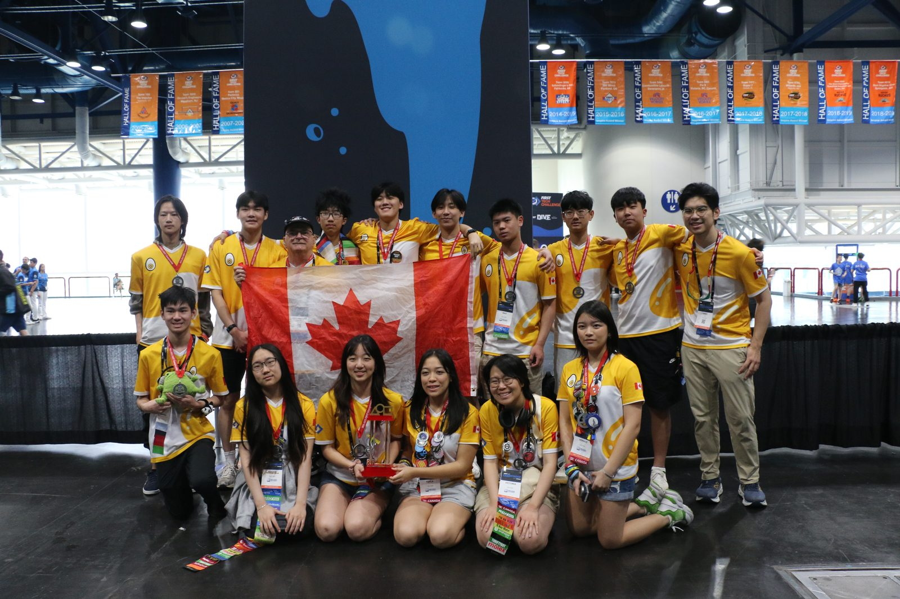

FIRST Tech Challenge 18844, co-captain and lead programmer
PID controlOdometryCNNJavaOpenCV


What it is
Competitive robotics with team 18844, ending at the 2025 FIRST World Championships. I was co-captain, lead software, and main driver.
Localization
Autonomous scoring depends on the robot knowing where it is on the field. I built two-wheel odometry using dead wheels (unpowered tracking wheels) to measure movement, combined with an IMU for heading.
The two odometry wheels and the IMU gyro are combined to track the robot's position on an x-y coordinate plane.
The wheels measure movement relative to the robot. To get the robot's position on the field, we rotate each movement by the robot's heading using a rotation matrix. This converts robot-relative (local) coordinates into field-relative (global) coordinates.
Robot positioning
Scoring samples and specimens in autonomous needs precise, controlled movement. I used three PID controllers, one each for x, y, and heading. Their outputs are rotated by the robot's heading and converted into individual motor powers to drive the robot to its target position.

Integral control
With only kP and kD, the robot stopped slightly short of the target because the correction became too small near the end. To fix this, I only turned on the integral term within a small range of the target (10–20 cm). This prevents the integral from building up during long moves and causing overshoot. Near the target, the integral term grows over time and pushes the robot the last small distance, then stops once the target is reached.

Camera vision
A camera and a custom-trained neural network detector find the samples, and the camera angles are used to calculate each sample's x and y distance from the robot. A custom Python script also runs an OpenCV pipeline that uses HSV thresholds to find each sample's angle.


Result
1st place Connect Award, Ochoa Division, at the 2025 FIRST World Championships.